Meet Our Dental Team in Hays
A Team That Will Make You Feel Like a Part of the Family
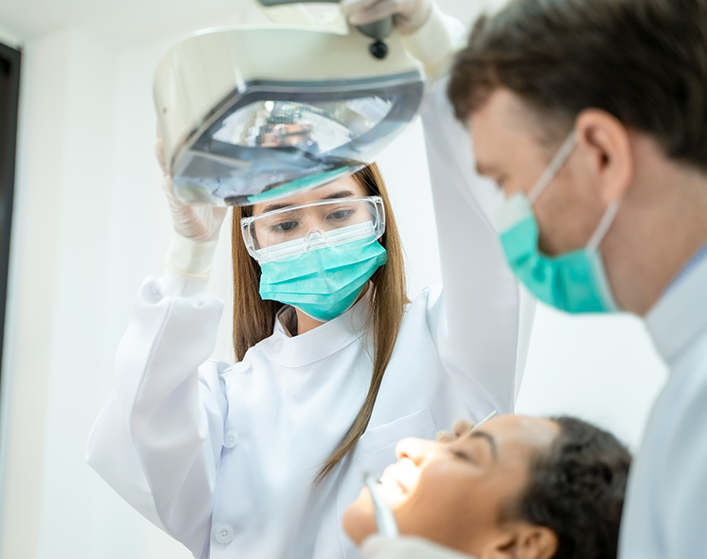
Our friendly team at Lifetime Dental Care is passionate about providing quality treatment and education to patients. We are devoted to helping you improve and maintain your smile and your oral health, and we work hard to make sure you are comfortable when you visit our practice. We invite you to call us to learn more about complete health dental care in Hays, and to make your appointment with our experienced dentists. We look forward to meeting you and helping you care for your smile!
Amanda
Office Manager
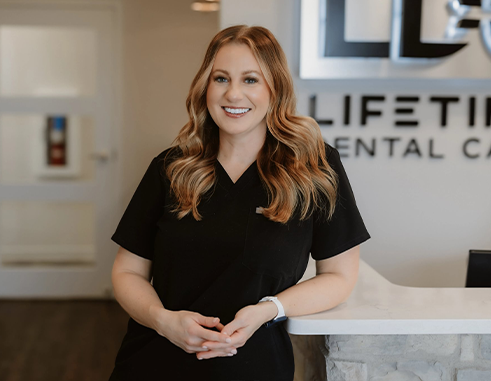
Amanda’s favorite part of her career is that every day presents something new, whether it’s helping a patient fit treatment into their life or developing new skills. She’s a graduate of Fort Hays State University and brings over a decade of experience to the practice, all of which have been spent right here at Lifetime Dental Care.
From Russell, Kansas, Amanda enjoys spending time with her husband, their two dogs, and two children. Her hobbies include shopping, traveling, and teaching her children new things. A fun fact about Amanda is that she has a really good memory!
Cortney
Scheduling Coordinator
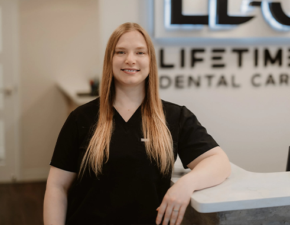
Cortney has spent her entire dental career at Lifetime Dental Care as our scheduling coordinator. She enjoys being a part of such a great team and helping patients with their oral health. She attended Otero Junior College in La Junta, Colorado.
Cortney grew up in Southeastern Colorado and met her husband in Hays. Together, they have two lively dogs who they love to go on long walks with. She enjoys traveling, visiting museums, and experiencing new things with her husband. She also likes listening to music, reading, and arts and crafts.
Leah
Treatment Coordinator
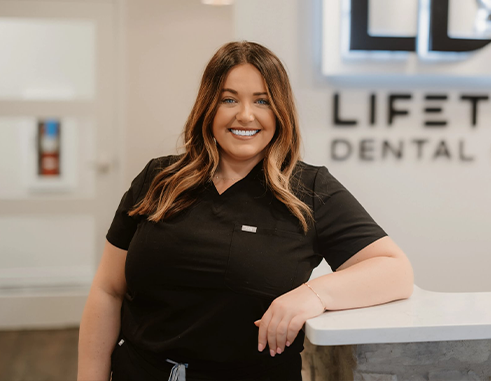
Leah’s favorite part of her career is helping patients get their smiles back and making sure their treatments are able to fit into their lifestyles and financial needs. She attended the University of Nebraska – Omaha and has been at Lifetime Dental Care for over eight years now.
Originally from Oakland, Nebraska, Leah is married and has two bonus sons. She enjoys shopping, traveling, and spending time with family. She also has two adopted geriatric dogs.
Cammi
Insurance/Billing Coordinator
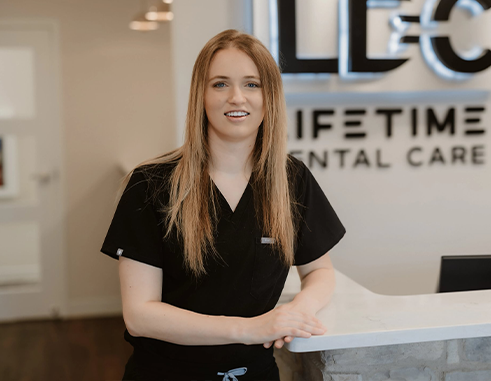
Cammi feels that the best part about working in dentistry is being able to make a tangible difference in patients’ health and confidence. She does her best to help ease patient fears and build strong relationships. Cammi attended Fort Hays State University and has several years of experience.
Cammi is from Hays and lives in the community with her husband and two bonus kids. Together, they enjoy traveling whenever they have time in the summer months. A fun fact is that Cammi has two Irish twins who were born 11 months apart.
Lori
Registered Dental Hygienist
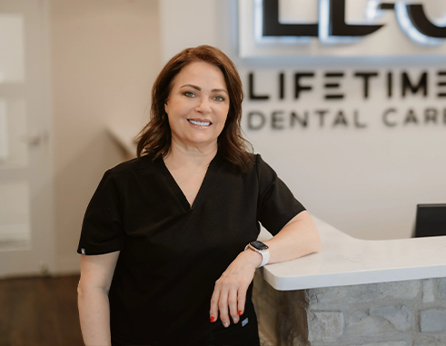
Lori brings a wealth of knowledge and expertise to the practice with over 40 years of experience. She enjoys helping her patients achieve good health and providing them with the education needed to maintain it. She also enjoys spending one-on-one time with her patients to help them achieve their goals. Lori attended UMKC School of Dentistry’s hygiene program and is licensed in administering anesthetic and nitrous oxide.
Originally from Hoxie, Kansas, Lori and her husband have been married since 1986. They have three adult children and three grandchildren. Whenever she isn’t at the office, she enjoys photography, painting, digital videography, and spending time with her grandkids making memories. An interesting fact about Lori is that she’s ambidextrous when she works.
Michele
Registered Dental Hygienist
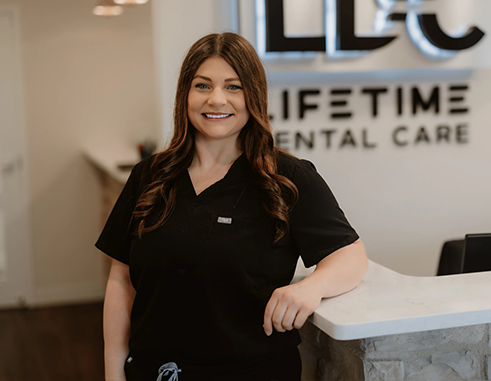
Michele enjoys helping her patients achieve and maintain healthier smiles through education, prevention, and compassionate care. She earned her Bachelor of Science in Dental Hygiene from Fort Hays State University and is certified in nitrous oxide monitoring, CPR, and local anesthetic. She regularly volunteers her time providing free services for local clinics and within the community.
From Victoria, Kansas, Michele’s family includes her boyfriend, their energetic young son, and their goldendoodle puppy, Ruby. Whenever she isn’t at the office, you can find her cheering on the Chiefs and Packers and watching her son play soccer and flag football. She also likes to spend quality time with her family, who she’s lucky to have close by.
Becca
Dental Hygienist
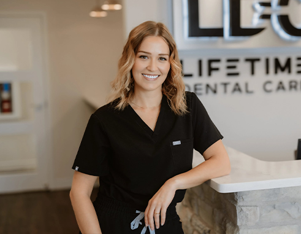
Becca has over a decade of experience and enjoys helping her patients maintain the healthiest smiles around! She attended Colby Community College and is certified by the AAFE to provide BOTOX and fillers. She also has her Extended Care Permit 1 through the Kansas Dental Board.
From Ellis, Kansas, Becca is married and has a toy poodle named Gracie. In her free time, she enjoys camping and going to the lake as well as fishing with her dad. She also enjoys traveling with her husband. An interesting fact about Becca is that she’s a huge Harry Potter nerd and loves re-watching the movies and reading the books.
Melissa
Dental Hygienist
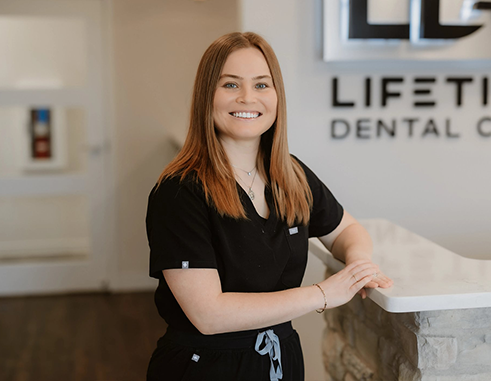
Melissa enjoys helping her patients improve their oral health by educating them on how to boost their homecare routine. She’s a graduate of Wichita State University, where she earned her Bachelor of Science in Dental Hygiene. She’s also certified in laser dentistry and CPR.
Originally from Hoisington, Kansas, Melissa enjoys spending time with her fur baby, Yogi, outside of work. She also likes to read, camp at Lake Wilson with her family, and go hiking. She is married to her husband of several years, Xavier.
Nicole
Dental Assistant
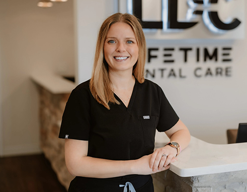
Nicole enjoys helping patients get healthy, seeing them smile, and building trust with the team at Lifetime Dental Care. She loves being on her feet and helping out around the office in any way she can! She attended Fort Hays State University and has her certifications in nitrous oxide and BLS.
From Derby, Kansas, Nicole is married and has two children and a dog named Crew. She enjoys traveling, thrifting, drinking coffee, and spending time with her family. You can always find her at the lake or watching dirt track racing. Nicole is addicted to purses and bags!
Carissa
Dental Assistant/Lab Technician
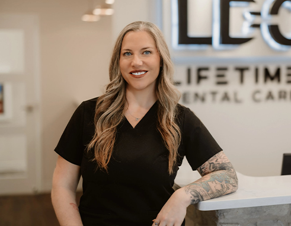
Carissa’s favorite part about working in the dental field is being able to see the look on her patients’ faces after the team has significantly changed their smiles for the better. Some patients come to the team without wanting to look in the mirror, and helping them get a smile that they are proud to show off is priceless. Carissa attended McCook Community College, where she earned her Associate of Science. She has training in 3D printing prosthetics as well as relining and repairing partial and complete dentures.
Originally from Culbertson, Nebraska, Carissa and her husband Jonathan are the proud parents of three boys and their four-legged daughter, Wrecka. She enjoys spending her free time at Lake Wilson in the summer, where they like to boat, kayak, camp, and sunbathe. She also enjoys landscaping, listening to live music, and cheering on the Huskers and Raiders, despite her husband’s die-hard fandom of the Chiefs. A fun fact about Carissa is that her father was a drummer for a band and she grew up performing as a singer!
Phoenix
Dental Assistant
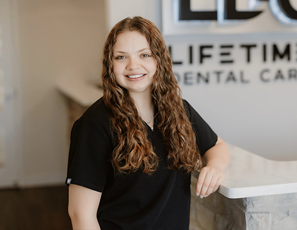
Phoenix likes meeting new patients and helping them get healthier! She enjoys watching patients get back to loving their smiles again after becoming a member of the Lifetime Dental Care family. She also values being able to work alongside such amazing teammates. Phoenix is certified in nitrous oxide and BLS.
Originally from Norton, Phoenix is the oldest out of three kids. Her family likes to take vacations to Florida together, but you can also find her watching movies and relaxing at home! An interesting fact about Phoenix is that she’s a very competitive person and enjoys challenging herself by taking up new hobbies and tasks!
Lilly
Dental Assistant
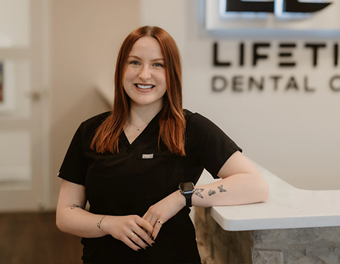
Lilly’s favorite part about working at Lifetime Dental Care is being able to work alongside Dr. Lowe. He’s a passionate and inspirational mentor who inspires her to be the best she can be! She has her certifications in CPR and nitrous oxide.
From Plainville, Lilly’s family includes her three siblings and her mom, who has always pushed her to be the person she is today. She enjoys spending time with them every chance she gets. Outside of the dental office, you can find Lilly going on walks, reading, thrifting, and painting. An interesting fact about Lilly is that she likes anything old or vintage!
Amanda
Dental Assistant
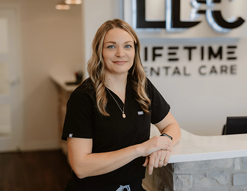
Amanda’s favorite part of being a dental assistant is being able to take X-rays and see how everyone’s teeth are unique. She attended KCKCC and has her BLS Certification.
From Junction City, Amanda is married with two beautiful daughters who are each very active in sports and school activities. Together, they love to travel as a family and experience new things. Amanda enjoys wrestling, softball, and watching almost every sport there is. An interesting fact about her is that before this, she used to be a law enforcement officer and detective.
Chelsae
Dental Assistant
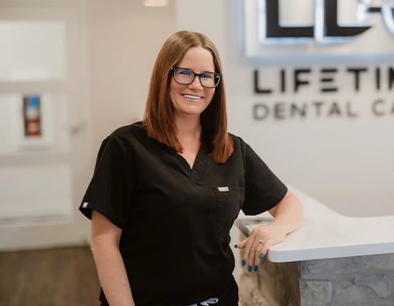
Chelsae’s favorite part of working in the dental field is helping her patients get their mouth healthier. She is certified in CPR and nitrous oxide and has been with our team for over a year.
From Hays, Chelsae has two adult children and three cats with her high school sweetheart. Whenever she isn’t at the practice, she enjoys watching movies, spending time with family, crocheting, and going to metal and rock concerts. An interesting fact about Chelsae is that she loves animals and would have a farm full of all kinds of animals if she had the time and money!
Jana
Advisor
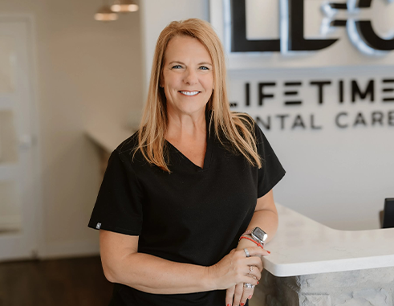
Jana is Dr. Lowe’s wife, and she loves supporting his dreams and the team in whatever capacity she’s able to. She’s been here from the very beginning and has been working alongside him for over 25 years. She has trained many of the team members and regularly completes continuing education to stay up-to-date with the latest advancements in dentistry.
Jana has three grown children who call Hays their home. Together, they enjoy traveling, boating, camping, watching movies, spending time with family, and going to and watching KSU and NU football games. An interesting fact about Jana is that she has a Bachelor of Science in Early Childhood/Elementary Education, but she has always worked in the dental field.